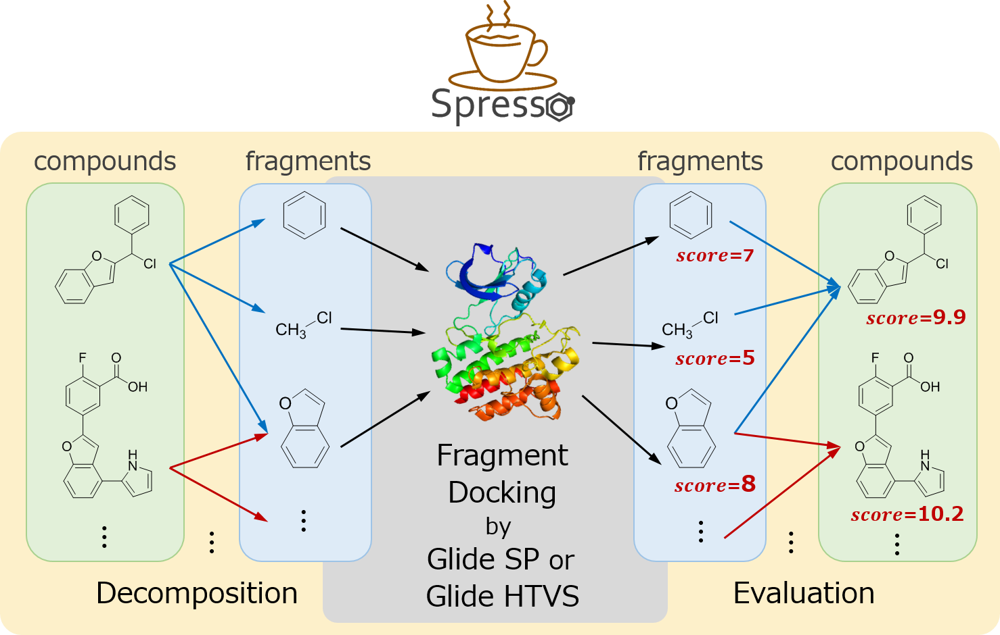
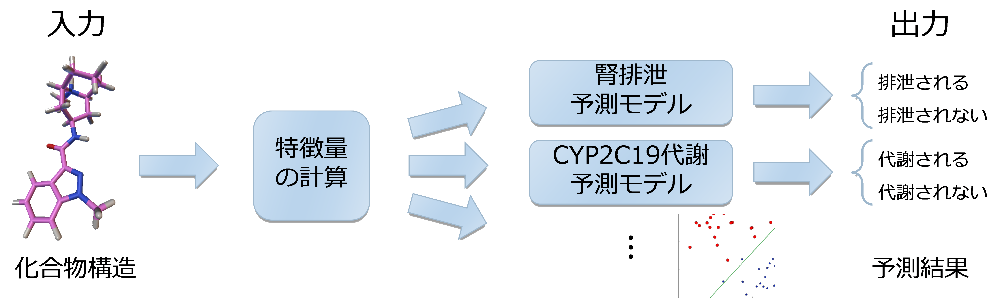
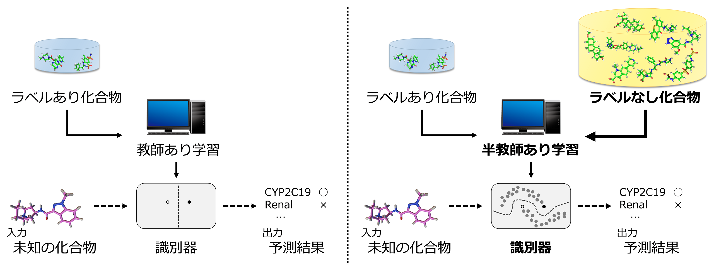

タンパク質の3次元構造に基づいたバーチャルスクリーニングにおいて、ドッキング計算を行う前の化合物のプレスクリーニングを行います。
共溶媒分子動力学 (Cosolvent molecular dynamics; CMD) 法はタンパク質を溶質、水分子と共溶媒分子を溶媒とした分子動力学 (Molecular dynamics; MD) 法です。共溶媒として芳香環や疎水基、水素結合供与体、水素結合受容体などを用いることで、水分子では観測できないタンパク質表面のホットスポットの発見や、低分子結合部位の検出、低分子結合親和性の予測など、薬剤開発の様々なステップで活用することができます。
既存のCMD手法 MixMD, SILCS, MDmix は、用いている共溶媒のコンセンサスがとれておらず、さらに分子構造の多様性と比べると用いている共溶媒が網羅的であるとは言い難い状態です。そのため、薬剤構造の部分構造で構成される多様な共溶媒構造を用いたCMD計算を実施し、どのような共溶媒のセットにすれば「網羅的」と言えるか検討を進めています。
タンパク質の3次元構造を用いたバーチャルスクリーニング (Structure-based virtual screening, SBVS)の計算量を抑えるため、化合物群をあらかじめ削減すること（プレスクリーニング）が多く行われています。これについて、タンパク質の3次元構造に基づきつつも高速に化合物を評価するプレスクリーニング手法Spressoを開発しています。

薬物化合物の分子量 (MW)、分配係数 (logD)、血漿中タンパク質非結合率 (fup)などを計算し、これらの値を利用してヒト体内のどのような代謝・排泄経路（クリアランス経路）を通過するかを予測します。

この予測問題は「ラベル付け（クリアランス実験）のコストが非常に高く、ラベル付けされていない化合物構造は大量に存在している」という性質を持っています。 したがって、一般によく用いられる教師付き学習ではなく、ラベル付けされていないデータも利用することの出来る半教師付き学習が予測に適していると考えられます。
